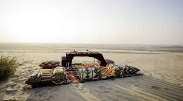
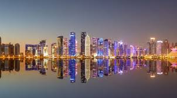
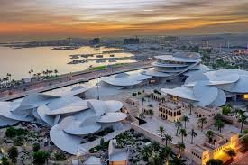

Discverr the sand dunes

Discover the nature of Qatar

Discover westbay's tall tower
Discover the historical mosques
Discover the biggest mall Place Vendome of Qatar

Discover the National Museum of Qatar.